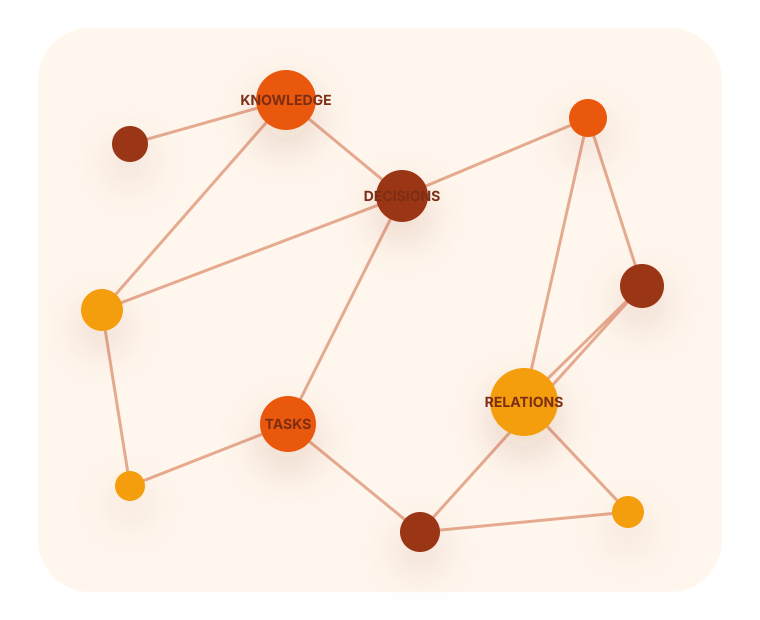

Knowledge
Durable facts, concepts, sources and typed relationships.
Human-governed • source-backed • evolving
Personal AI Workspace connects knowledge, relationships, decisions, tasks and integrations in one owner-controlled system.

Why it exists
Important facts, projects, relationships and commitments are usually scattered across conversations and tools. Personal AI Workspace creates a durable, reviewable source of context that can be loaded through approved connectors.
It is deliberately human-governed. The owner controls storage, consent, structural changes and external actions. The system can learn from use—but it cannot silently redesign itself.
Architecture
Durable facts, concepts, sources and typed relationships.
People, interactions, commitments, context and careful epistemic labels.
Options, criteria, predictions, outcomes, patterns and lessons.
A/B/C priorities with verified execution backends and consent rules.
Gmail, Calendar, Contacts, Drive, GitHub and optional automation.
Evidence-based operational observations and owner-approved improvements.
Current release
The latest update adds a reliable session-start due-check for the System Evolution Lab. It protects urgent user work, avoids duplicate reviews and never pretends to run in the background without real automation.
Control
Version history
Added a mandatory due-check so session-triggered weekly evolution reviews are not forgotten.
Added controlled retention of materially relevant sensitive context and a human-governed system evolution loop.
Added explicit approval before structural changes plus final personalization and project-instruction snippets.
Replaced the single long Constitution with a modular index, domain modules, and truncation-safe loading rules.
Added the mandatory first-response manifesto and the About the System page.
Added the dedicated Creators page, original attribution rules, and local deployment metadata.
Introduced the first complete guided installation flow for a persistent, user-controlled AI workspace.
Original creators
Kraków, Poland
Initiator, co-creator and product-vision lead. Michał shaped the framework around practical support for personal life, relationships, development, work and business.
michal24749@gmail.comConcept and architecture co-creator
Co-creator of the knowledge, relations, decision, task, evidence, consent, integration and system-evolution architecture, plus the deployment documentation.
Open source
Apache License 2.0 allows use, modification and redistribution. Derivatives must retain the license, mark changed files and preserve the attribution in the project NOTICE.